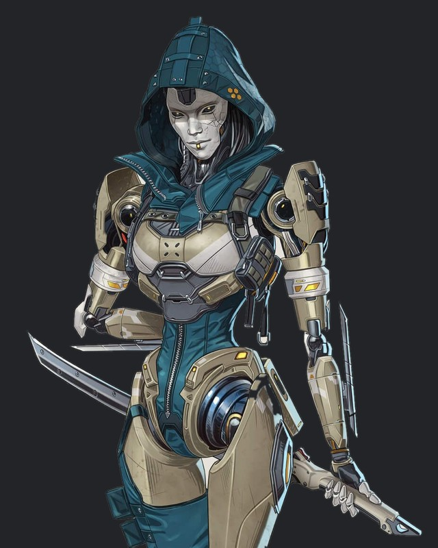

2646
Somers and Reid extract branthium from a black hole
Dr. Ashleigh Reid cuts Dr. Mary Somers' tether and leaves her to die. Somers escapes, having lost 87 years in what felt like 246 days.

Scientist who left her colleague Mary Somers to die in 2646, then was converted into a simulacrum in 2655. Her head is rebuilt in Season 5, her human identity is awakened in Season 10, and she joins the Games in Season 11 to search for her past.
Dr. Ashleigh Reid cuts Dr. Mary Somers' tether and leaves her to die. Somers escapes, having lost 87 years in what felt like 246 days.
A branthium theft attempt kills the Project Iris scientists and tears a rift in Olympus, leaving the city uninhabitable. Large branthium deposits are found, ending the energy crisis, and Dr. Reid is converted into a simulacrum.
The Legends assemble pieces of a beta plane artifact into Ash's head. Rebuilt, Ash starts the transfer of the Games to Olympus.
Somers forcibly awakens the human side of Ash.
Storm Point becomes a new Apex Games arena. Ash joins the Games to learn about her past and partners with Tae Joon Park.
Ash breaks into Horizon's makeshift lab to destroy the shard and halt her time travel research.